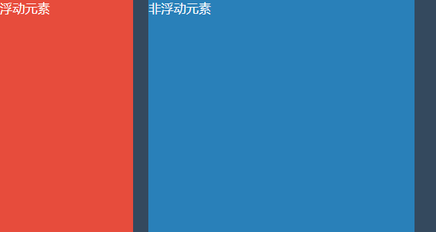
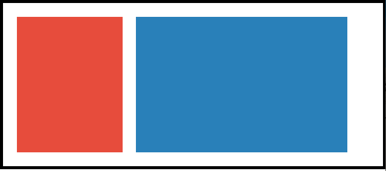
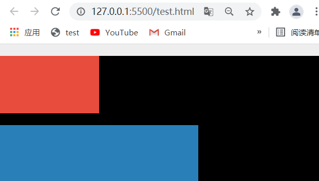
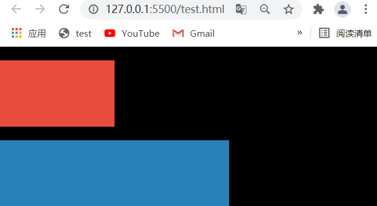
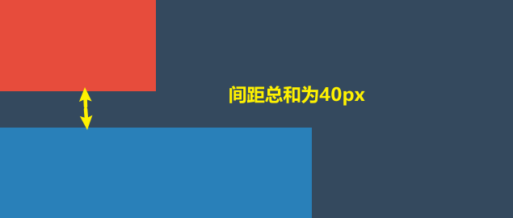

记住首图，后面要考(带你理解BFC)🐾
什么是BFC？
BFC 全称为block formating context（块级格式化上下文），它有什么作用呢？
若一个元素触发了BFC，则这个元素就可以被视为一个与外界隔离的独立容器，在该容器内的布局规则不会影响到外部的布局。
什么？不好理解？我形象的给大家比喻一下：
在孩童时代，调皮的小孩子都会给桌子刻下一条三八线，用于和可爱的同桌井水不犯河水 😄，这条三八线将桌子一分为二，左边是我的，右边是你的，而且我的地盘东西想怎么摆就怎么摆，我也不会影响到你的地盘。BFC元素和这种情况是一模一样的，桌子的左右部分都可视为一个BFC。
如何触发BFC
上文我们讲明了什么是BFC，那要怎么触发呢？下面我将方法列举出来：
- 根元素 （html）
- 设置浮动 （
float不为none默认值） - 溢出处理 （
overflow不为visible默认值） - 确切定位 （
position不为static默认值、relative、sticky） - 陈列方式 （
display设为inline-block、inline-flex、inline-grid、table）
BFC有何作用
上文讲明BFC是什么，也阐述了触发条件，那BFC到底有什么作用呢？我们为什么要使用它？
BFC可以解决一些实际布局上的问题，这也是它的特点（自身为单独隔离的元素，自身内部布局不会影响外界），下面介绍BFC能解决的一些问题。
浮动重叠
如果一个浮动元素后面跟着一个非浮动的元素，那么浮动元素就会覆盖非浮动元素，可以利用这个特性来做自适应的两栏布局，但在一般网页中，我们可能不希望出现这种情况，这时就可以通过触发BFC解决。
让非浮动元素触发BFC，从而不影响外部的布局。
示例:
未触发BFC：

触发BFC后：
- 默认情况下，浮动元素会覆盖非浮动元素如图一
- 给非浮动元素触发BFC，解决问题，如图二
代码：
1 | <style> |
多个子元素浮动影响父元素高度
若存在多个浮动的子元素，则父元素高度将不会将浮动的子元素计算进去。这时也可以通过触发BFC解决。
让父级元素触发BFC
示例:
未触发BFC：
触发BFC后：
代码：
1 | <style> |
外边距塌陷
外边距塌陷也称为外边距合并，这种现象是指：在正常文档流中两个相邻（兄弟或父子关系）的块级元素的外边距，组合在一起变成单个外边距。
值得注意的是：只有上下外边距才会有塌陷，左右外边距不会出现这种问题。
父子塌陷
下面通过示例讲解：
未触发BFC：
触发BFC后：让父级元素触发BFC解决
- 子级元素(红色box)与父级元素(黑色box)相邻，会发生外边距塌陷，当为红色box设置
margin-top时，我们预想的是红色box相对于父级元素产生顶部边距，但事实并非这样，实际上会将二者的外边距合二为一，出现图一的效果。 - 若要解决这个问题，只需要为将父级元素(黑色box)设置为BFC即可，这样内部的布局将不会影响外部，达到图二预想的效果
代码：
1 | <style> |
兄弟塌陷
下面通过示例讲解：
未触发BFC：
触发BFC后：
- 同级元素(红色box)与(蓝色box)相邻，会发生外边距塌陷，当为 红色box设置
margin-bottom、蓝色box设置margin-top时，我们预想的是外边距为二者之合，但事实并非这样，实际上会将二者的外边距合二为一，出现图一的效果。 - 若要解决这个问题，只需要将其中之一设置为BFC即可，这样内部的布局将不会影响外部，达到图二预想的效果
代码：
1 | <style> |
总结
BFC 全称为block formating context（块级格式化上下文），若一个元素触发了BFC，则这个元素就可以被视为一个与外界隔离的独立容器，在该容器内的布局规则不会影响到外部的布局。
触发BFC的条件：
- 根元素 （html）
- （
float不为none默认值） - （
overflow不为visible默认值） - （
position不为static默认值、relative、sticky） - （
display设为inline-block、inline-flex、inline-grid、table）
BFC解决的问题：
- 非浮动元素紧跟浮动元素导致重叠
- 非浮动元素触发BFC解决
- 多个子元素浮动，影响父元素高度
- 父级元素触发BFC解决
- 上下外边距塌陷
- 父子元素塌陷
- 让父级元素触发BFC解决
- 兄弟元素塌陷
- 其一触发BFC
- 父子元素塌陷
最后
本文到此结束，希望对你有所帮助，我是 Ashun ，在校大学生，立志成为资深前端工程师，欢迎大家一起交流、学习。后续更新更多文章，请持续关注哦~
原创文章，文笔有限，才疏学浅，文中若有不正之处，速速告知。